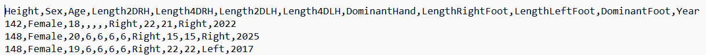
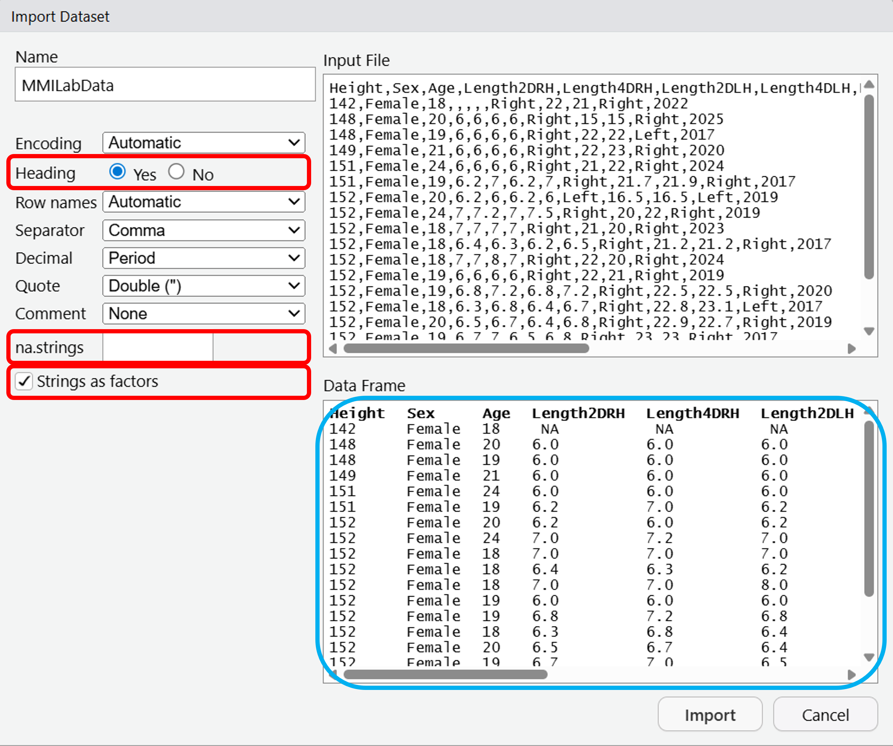
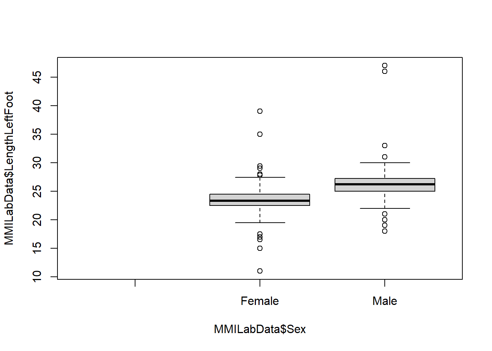
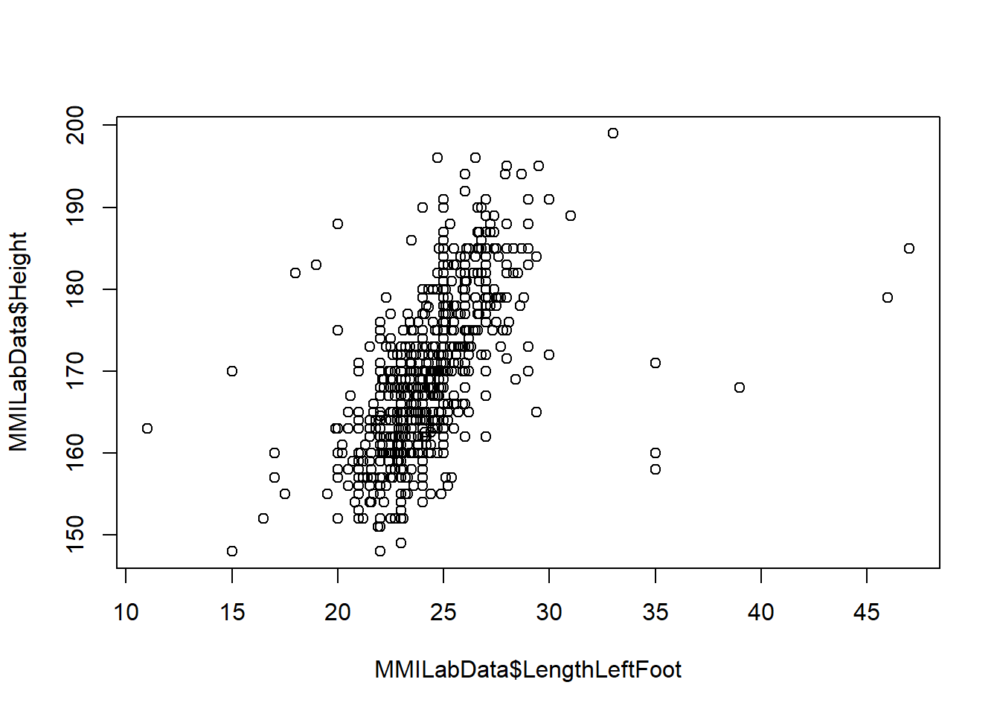

Code
summary(MMILabData)
#And the output should appear in the console belowSam McAllister
In this tutorial we will explore variation in human height and some covariables that you have collected prior to this session.
As a biologist you will routinely undertake experiments and generate data such as this. An essential skill is to be able to make sense of these results by both visualising them, and analysing them, by performing statistical tests.
To do this we will be using the software packages R and RStudio.
Download the ‘MMILabData.csv’ data file from Moodle.
Remember, .csv formats mean comma separated values. What this means is that entries in the data are separated by commas. If we looked at the data in something like Notepad or Text Edit then we could see that format:

If we opened this in Excel and saved it, then the format would be altered. So if you do open it in Excel, don’t save it.
Otherwise, we can directly open this format in R!
To import the dataset, you’ll want to click File > Import Dataset > From Text (base)…
Navigate to the MMI_Lab_1 folder that you previously created in Understanding R, and click on MMILabData.csv.
A window will open up, from there it gives a number of options for importing your dataset.
We will change the Heading to Yes - this means that we treat the first row of data as the headers, or the column names.
We will also change the na.strings from NA to blank - this removes any missing data from the dataset.
Lastly, tick the box for Strings as factors - this will convert any text values in the data to factors. These are just categorical data that can take fixed values - imagine we had smoking information in our dataset, a factor for this smoking column could be “Yes” or “No” and if we use it as a factor then it works better for plotting.
Your dataset should look like the Data Frame highlighted in blue. You can now click Import.

The dataset represents information from students collected over a number of years.
Have a look at the data in R to understand what variables are looked at.
All the information can be found in the summary - if you’re confused by Length… they follow this format: Length2DRH = Length of 2nd Digit on Right Hand, Length4DLH = Length of 4th Digit on Left Hand.
Generate a boxplot of the variation in LengthLeftFoot.
Now generate a boxplot of the LengthRightFoot.
Now, wouldn’t it be better to compare both? To select two variables to highlight on the same plot, we’ll combine both together into the same function:
Looks good - if you want the names of the boxplots to correspond to either foot, try adding an argument to the function like names = c("Left", "Right").
What is the null hypothesis for the relationship between the mean values of LengthLeftFoot and LengthRightFoot?
The null hypothesis would be that there is no difference in the mean of LengthLeftFoot and the mean of LengthRightFoot.
We have also not performed the statistical test for this yet, so we could not say whether we accept or reject the null hypothesis.
Note that the question is comparing the means (or population averages), while the question of the previous tutorial for the chi-squared test was comparing proportions of males and females. These different questions will have different null hypothesis.
For comparing means, we have to use T test. To determine if there is a significant difference between observed and expected frequencies, we use the Chi-squared test.
Perform a T test comparing the means of the LengthLeftFoot and LengthRightFoot. For this, we use the t.test function:
Welch Two Sample t-test
data: MMILabData$LengthLeftFoot and MMILabData$LengthRightFoot
t = 0.0014605, df = 1545.9, p-value = 0.9988
alternative hypothesis: true difference in means is not equal to 0
95 percent confidence interval:
-0.2600837 0.2604713
sample estimates:
mean of x mean of y
24.19535 24.19516 To find the difference in mean length, we simply look at the output of running the t.test - you’ll see the last entry reads:
sample estimates: mean of x mean of y 24.21880 24.21285
And this is simply the mean of x (LengthLeftFoot) and the mean of y (LengthRightFoot) - or whatever order you put these variables in the function, e.g. t.test(x,y). To find the difference, do (mean x) - (mean y).
The probability of observing this difference if the null hypothesis were correct is simply given by the p-value, which you can see on the output is 0.9634.
This p-value is quite high, and greater than 0.05. So therefore, we fail to reject the null hypothesis. The p-value suggests that it is extremely likely we would have observed the very small difference in mean left and right feet by random sampling error if the null hypothesis was correct.
So therefore, it looks like there’s no real difference in the mean of the length of the left foot compared with the right.
To generate a scatter plot between a two variables we’ll use the tilda symbol ~
We could have just used a , between the variables and the plot would look the same.
However, we’re investigating a relationship so it’s good practice to start using the ~ as in a formula for exploring a relationship we typically use the format dependent_variable ~ independent_variable where we essentially ask: “how is the dependent variable affected by the independent variable?
E.g. how is the length of the left foot affected by the length of the right foot (or what is the relationship)?
You’ll see more of this later, but for now always use a ~ instead of a , .
What is the null hypothesis for the relationship between the LengthLeftFoot and LengthRightFoot?
The null hypothesis would be that there is no association between the LengthLeftFoot and the LengthRightFoot.
We have also not performed the statistical test for this yet, so we could not say whether we accept or reject the null hypothesis.
Note that this question relates specifically to the association between these two variables in individuals (i.e., does knowing anything about one variable provide any information about the other variable in a pair of observations from an individual)
Note that the question is asking about the association between these two variables in individuals (so does knowing the values of one variable provide information about the other variable in individuals).
The previous question for the T test was asking about comparing the means (or population averages) - so this is different from the relationship. As this is a different question, our null hypotheses will be different.
To determine if there is a significant assocation between the two variables, we will use a regression analysis.
To investigate the relationship between LengthLeftFoot and LengthRightFoot, we’ll run a linear regression analysis.
In this case, the LengthLeftFoot will be our response variable and LengthRightFoot will be our explanatory variable - Response_variable ~ Explanatory_variable . What we’re asking is: how is the LengthLeftFoot (response variable) affected by changes in the LengthRightFoot (explanatory variable).
The actual function to run linear regression is simply lm, but to simplify the output we’ll run summary on the results.
Call:
lm(formula = MMILabData$LengthLeftFoot ~ MMILabData$LengthRightFoot)
Residuals:
Min 1Q Median 3Q Max
-2.2540 -0.2441 -0.0315 0.1875 8.8110
Coefficients:
Estimate Std. Error t value Pr(>|t|)
(Intercept) 1.088848 0.230178 4.73 2.66e-06 ***
MMILabData$LengthRightFoot 0.955005 0.009458 100.97 < 2e-16 ***
---
Signif. codes: 0 '***' 0.001 '**' 0.01 '*' 0.05 '.' 0.1 ' ' 1
Residual standard error: 0.6897 on 772 degrees of freedom
Multiple R-squared: 0.9296, Adjusted R-squared: 0.9295
F-statistic: 1.02e+04 on 1 and 772 DF, p-value: < 2.2e-16The output looks horrible, but it’s easily interpretable once you know what to look for.
For now, let’s add use the output of the lm to add a regression line (or line of best fit) to out scatter plot!
By running the below code, you should have a regression line added to your scatter plot:
If this hasn’t worked, make sure that you have:
Made the plot and it shows in the plot panel
You have used the ~ instead of the , in the plot function
Now, let’s go back to the output of the lm and see if we can determine some answers from it.
Call:
lm(formula = MMILabData$LengthLeftFoot ~ MMILabData$LengthRightFoot)
Residuals:
Min 1Q Median 3Q Max
-2.2585 -0.2498 -0.0284 0.1851 8.8105
Coefficients:
Estimate Std. Error t value Pr(>|t|)
(Intercept) 1.062517 0.230085 4.618 4.51e-06 ***
MMILabData$LengthRightFoot 0.956349 0.009448 101.227 < 2e-16 ***
---
Signif. codes: 0 '***' 0.001 '**' 0.01 '*' 0.05 '.' 0.1 ' ' 1
Residual standard error: 0.7048 on 811 degrees of freedom
(34 observations deleted due to missingness)
Multiple R-squared: 0.9267, Adjusted R-squared: 0.9266
F-statistic: 1.025e+04 on 1 and 811 DF, p-value: < 2.2e-16For question 1, determining how much of the variation in LengthLeftFoot can be predicted by knowing the LengthRightFoot is given by the Adjusted R-squared value - so 0.9267.
For question 2, the probability that we would have observed an association of this magnitude if the null hypothesis were correct, and we had collected a random sample of the population, is simply given by the p-value - which we can see is < 2.2e-16 so we’ll use that as an answer. Note that this is not the exact p-value, but just saying that the p-value is less than this very significant value.
For question 3, given that this p-value is less than 0.05 we would be inclined to reject the null hypothesis - suggesting that it is extremely unlikely that we would observe the association between these two variables if the null was correct and our sample was unbiased with respect to this parameter. Therefore, we can be highly confident in rejecting the null hypothesis.
For question 4, if we’re looking at the intercept, then the x-axis value is set to 0, and we’re asking what the value in our y-axis should be. If the x-axis is the length of the right foot and at the intercept this is set to the value of 0, does it make sense to assume the null hypothesis of the length of the left foot would be anything other than 0 as well?
For question 5, the actual predicted intercept in the association test for LengthLeftFoot and LengthRightFoot is returned in the Coefficients section, looking at the (Intercept) and the Estimate section - which is 1.0625166. So, when the LengthRightFoot is 0, the predicted LengthLeftFoot is 1.0625166, which means that for most people they have a bigger left foot!
As an aside, the value below the (Intercept) is MMILabData$LengthRightFoot - the values here indicate the predicted increase in LengthLeftFoot with every unit increase of LengthRightFoot. So, for every unit increase in LengthRightFoot, there’s a predicted increase of 0.9563488.
For question 6, the probability that we would have observed an intercept of this magnitude is given in the same Coefficients section, at the end Pr(>|t|). We can see this is 4.5054547^{-6}.
For question 7, we’ve asked if we should reject the null hypothesis based on this information. Now, the p-value is less than 0.05 so it seems that we can be confident in rejecting the null hypothesis.
However, based on our biological knowledge there might not be any reason to expect that the intercept wouldn’t be zero. Does it make sense that one foot is 1cm bigger than the other?
If we look at the scatter plot we’ll see at least one outlier - someone has a 20cm right foot and a 30cm left foot!
It is possible this is a measurement and/or reporting error, or that we have just been unlucky and happened to have a sample that has been skewed by one or a few individuals who happened to have longer left feet.
The latter would be an example of a type I error where we incorrectly reject the null hypothesis due to sampling error!
So, be wary of blindly accepting significant results - and think more on if the data is appropriate to begin with, or if the results make sense biologically!
For question 8, the results mostly make sense. We expect the relationship between the length of the left and right foot to be very similar within an individual (balance would probably be an issue if we had very different feet lengths), but different between individuals, broadly dependent on their overall size.
From the T test, we see the lack of difference in mean lengths of left and right feet in the population - which wouldn’t be suprising.
We also expect that the intercept for the association between length of left and right feet to be zero (i.e., someone with a vanishingly small right foot should have a vanishingly small left foot) which we mostly see, and for the majority of people there is no huge difference in feet length.
Now we’ll use what we’ve learned so far and apply this to new variables to investigate, so far we’ve investigated continuous data but now we’ll look at some categorical data to see how this differs.
Generate a boxplot of the LengthLeftFoot dependent on Sex.

Perform a T test to determine if the mean of LengthLeftFoot is dependent on being Male or Female.
Welch Two Sample t-test
data: MMILabData$LengthLeftFoot by MMILabData$Sex
t = -12.524, df = 264.99, p-value < 2.2e-16
alternative hypothesis: true difference in means between group Female and group Male is not equal to 0
95 percent confidence interval:
-3.232783 -2.354399
sample estimates:
mean in group Female mean in group Male
23.49154 26.28513 Why did we use a ~ here, when we used a , to separate variables in the previous T test we did?
You might want to run ?t.test to investigate the arguements further to pick the correct answers.
There’s no such thing as “statistical matchmaking mode” - it’s total nonsense.
The other options can be found in the ?t.test help panel.
Basically, because Sex is categorical (Male or Female in this case) and we’re investigating if LengthLeftFoot is dependent on Sex, we need to use the tilde. This is just a requirement of the function.
Previously, we could just use a comma because we were looking at comparing the means of two continuous variables.
Now try to answer the questions about the output of the t.test:
to
Females feet are on average to units than males.
Welch Two Sample t-test
data: MMILabData$LengthLeftFoot by MMILabData$Sex
t = -12.524, df = 264.99, p-value < 2.2e-16
alternative hypothesis: true difference in means between group Female and group Male is not equal to 0
95 percent confidence interval:
-3.232783 -2.354399
sample estimates:
mean in group Female mean in group Male
23.49154 26.28513 For question 1, the mean of the male LengthLeftFoot is 26.2851282 and the mean of the female LengthLeftFoot is 23.4915371. Simply subtract the higher number from the other.
For question 2, the 95% confidence intervals for the difference in mean length of LengthLeftFoot between males and females is returned in the output under 95 percent confidence interval.
For question 3, the confidence intervals tell us how the range in which one level (Female) differs to another level (Male). This is why these values are negative, it tells us that the first level (Females) is less than the second (Males). The reason why it chooses Females first is a quirk of factors - it chooses the levels of a factor alphabetically, so it goes Females first then Males. To see this, you could run levels(MMILabData$Sex). If you wanted to reorder the levels to Males then Females, you could do so by running levels(MMILabData$Sex) = c("Males", "Females").
Now, perform a regression analysis to investigate the relationship between LengthLeftFoot and Sex.
Call:
lm(formula = MMILabData$LengthLeftFoot ~ MMILabData$Sex)
Residuals:
Min 1Q Median 3Q Max
-12.4915 -1.1617 -0.1851 1.0085 20.7149
Coefficients:
Estimate Std. Error t value Pr(>|t|)
(Intercept) 23.49154 0.09552 245.93 <2e-16 ***
MMILabData$SexMale 2.79359 0.19031 14.68 <2e-16 ***
---
Signif. codes: 0 '***' 0.001 '**' 0.01 '*' 0.05 '.' 0.1 ' ' 1
Residual standard error: 2.299 on 772 degrees of freedom
Multiple R-squared: 0.2182, Adjusted R-squared: 0.2172
F-statistic: 215.5 on 1 and 772 DF, p-value: < 2.2e-16Length of the left foot = (+ if male) cm
Let’s now look at the relationship between Height and dependent on LengthLeftFoot.
Can you make a scatterplot of the two?

Now, perform a regression analysis for Height dependent on the LengthLeftFoot.
Call:
lm(formula = MMILabData$Height ~ MMILabData$LengthLeftFoot)
Residuals:
Min 1Q Median 3Q Max
-35.370 -4.844 -0.561 4.327 27.602
Coefficients:
Estimate Std. Error t value Pr(>|t|)
(Intercept) 118.8814 2.5732 46.20 <2e-16 ***
MMILabData$LengthLeftFoot 2.0758 0.1057 19.63 <2e-16 ***
---
Signif. codes: 0 '***' 0.001 '**' 0.01 '*' 0.05 '.' 0.1 ' ' 1
Residual standard error: 7.638 on 772 degrees of freedom
Multiple R-squared: 0.333, Adjusted R-squared: 0.3321
F-statistic: 385.4 on 1 and 772 DF, p-value: < 2.2e-16Add the regression line to the scatterplot.
Now answer the questions about the regression analysis - note that to answer one of them you’ll have to do another regression analysis.
The LengthLeftFoot predicts ~ of the variation in height.
Sex predicts ~ of the variation in height.
Therefore, Sex is slightly powerful than LengthLeftFoot in predicting Height.
Perform a regression analysis of Height dependent on Sex and the LengthLeftFoot.
When we use multiple explanatory variables, we have to change the formula to include them in the design.
So, something like: lm(response_variable ~ explanatory_variable_1 + explanatory_variable_2)
That way, both explanatory variables are accounted for in the relationship with the response variable.
So, try to think about how to write the function so we can see the relationship of Height with Sex and LengthLeftFoot.
From the previous regression analysis, we found that LengthLeftFoot predicts ~ of the variation in height.
Likewise, sex was found to predict ~ of the variation in height.
If the two explanatory variables are truly independent, then the result of combining the two in the regression analysis would be additive, so the percentage variation being explained would be .
Since the predicted variance for both explanatory variables accounts for only of the variance in Height, Sex and LengthLeftFoot completely independent.
Since the variance explained by both explanatory variables is also either explanatory variable alone, and the p-values for both explanatory variables are 0.05, then they are .
+ ( * LengthLeftFoot) (+ if male) cm
Review the data and the tests that we’ve run so far.
Can you formulate your own hypothesis (one we have not previously addressed), that describes the relationship between two (or more) of the variables previously collected?
This could be something like:
Are the length left finger and the length right finger correlated?
Is either the length of left or right finger correlated with height or sex?
Is the difference in length of the 2nd or 4th digit dependent on height or sex?
Are any length measurements, or sex, associated with hand/foot dominance?
Visualise the variables in a way that provides insight into the relationships between them (boxplots, scatterplots, histograms). If you want to try something we have not yet made, or add arguments to a plot you have made, you can easily Google e.g. “In R, how do I make a bar plot?”, “In R, how do I make a scatter plot?”.
Remember to make your plot visually appealing and only add features that would make sense to add - sometimes less is more.
How did you visualise your variables?
There’s no wrong answer here, just be sure to understand what the plot is showing. If you’re stuck, please ask a demonstrator for help!
Perform a statistical test to examine your hypothesis - you’re most likely to use either a chi-square test, a T-test, or linear regression.
The chi-square test will test:
And the variables for this are:
The T-test will test:
And the variables for this are:
A linear regression will test:
And the variables for this are:
Which test did you use?
Did you gain evidence to support your hypothesis?
How certain are you that the association didn’t occur by chance?
What is the likely cause and effect relationship between your variables, if there is one?
This is the end of the tutorials, so hopefully you have some more confidence in using R and RStudio for data analysis.
If you didn’t finish the labs we strongly recommend doing so in your own time, as R is the default software we’ll use for data analysis in the rest of Level 2, Level 3, and Level 4.
This barely scratches the surface of all the amazing things you can do in R, so if it was interesting for you please do feel free to play around in your own time with online tutorials or datasets - you can do really cool things like create maps overlaid with population data, look at differences in gene expression between disease and healthy controls to find biomarkers of disease, or get familiar with crazy packages like replacing points on a graph with cats, or using a Barbie theme!